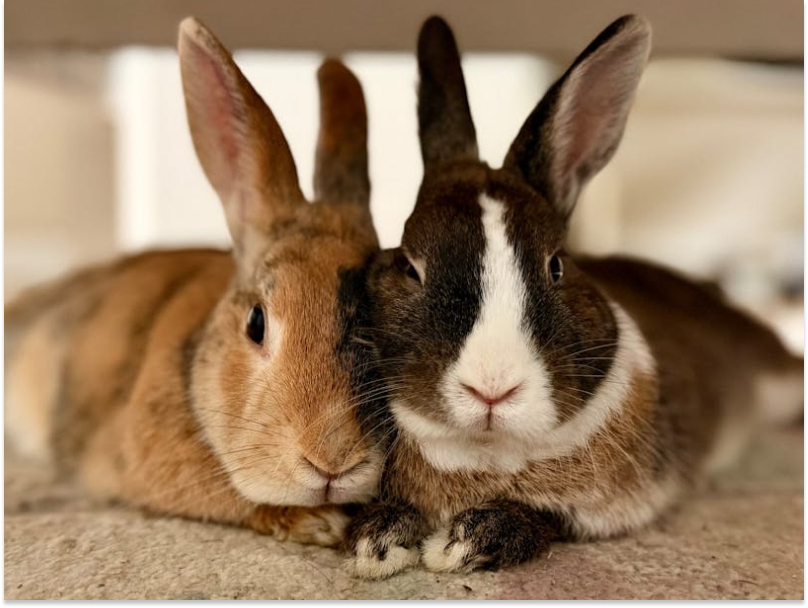
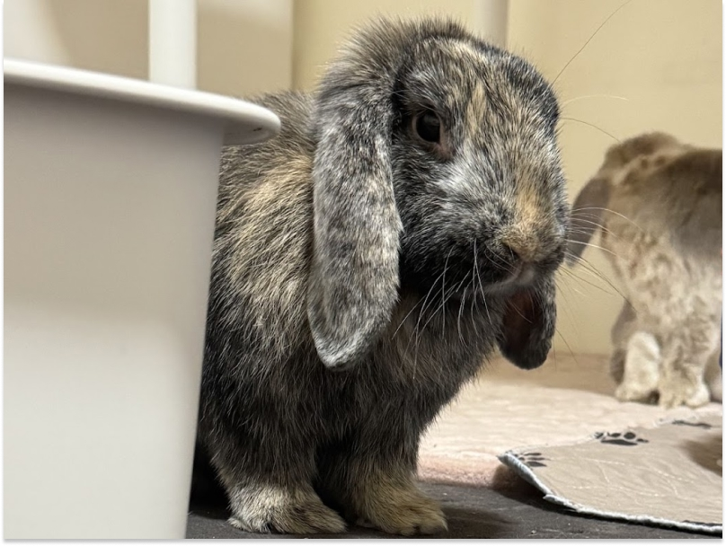

Sé un Hogar Temporal
Sé el Puente de Amor hacia su hogar definitivo
Un puente de amor hacia su familia definitiva. Muchos conejitos rescatados en Tijuana necesitan un espacio seguro y tranquilo antes de ser adoptados. Al abrir tu hogar temporalmente, salvas vidas y sanas corazones.

¿Por qué ser Hogar Temporal?
Tu apoyo es vital para que un conejo pueda recuperarse de situaciones de abandono y aprender a confiar de nuevo.
Recuperación
Los conejos estresados o en tratamiento médico sanan mucho más rápido en la tranquilidad de un hogar real. Brindas un entorno libre de estrés para cuidados post-operatorios.
Socialización
Aprenden a convivir con humanos y ruidos del hogar, facilitando su futura adopción permanente.
Salvas Vidas
Cada hogar temporal nos permite rescatar a un nuevo conejo de situaciones de abandono en Tijuana.
Requisitos en Tijuana
- ✓Residir en Tijuana o Playas de Rosarito, dentro de la zona metropolitana.
- ✓Espacio seguro: Área techada de al menos 2×2 m, libre de cables o peligros; interior sin corrientes de aire.
- ✓Tiempo y dedicación: Alimentar, limpiar y brindar cariño diariamente.
- ✓Atención veterinaria: Compromiso de llevarlo a sus citas (cubiertas por el refugio).
- ✓Compromiso bunny-proof: Otras mascotas amigables con conejos; no animales que puedan estresar o lastimar al conejo.
